CUARTEL GENERAL
UN ESPACIO PARA...
EL CHAPULÍN COLORADO
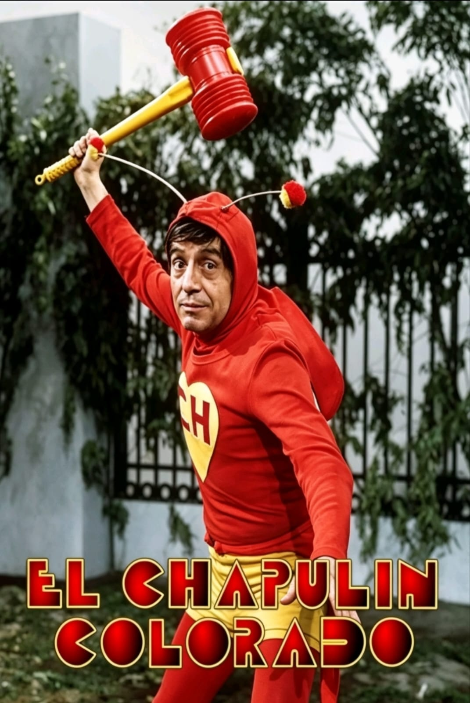
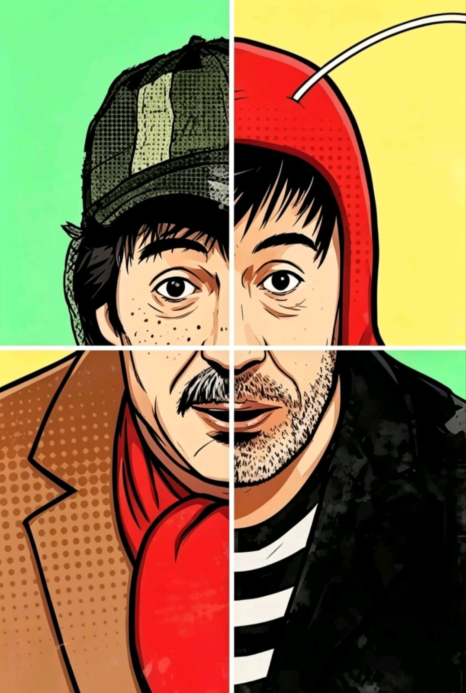
"Héroe no es el que no tiene miedo, sino el que lo vence."
— Roberto Gómez Bolaños.
UNA PEQUEÑA INTRODUCCIÓN
A diferencia de los superhéroes convencionales dotados de fuerza sobrehumana o valentía inquebrantable, el Chapulín Colorado nace como una parodia y, a la vez, un homenaje al heroísmo real.
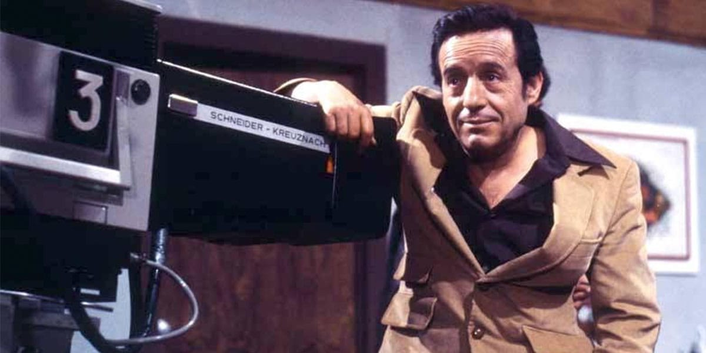
Creado por Roberto Gómez Bolaños en 1970, este personaje no destaca por su invencibilidad, sino por su capacidad de superar el miedo a pesar de ser torpe, flaco y, a menudo, bastante miedoso.
Su icónica frase "¡Más ágil que una tortuga... más fuerte que un ratón... más noble que una lechuga...!" resume perfectamente la sátira que representa.
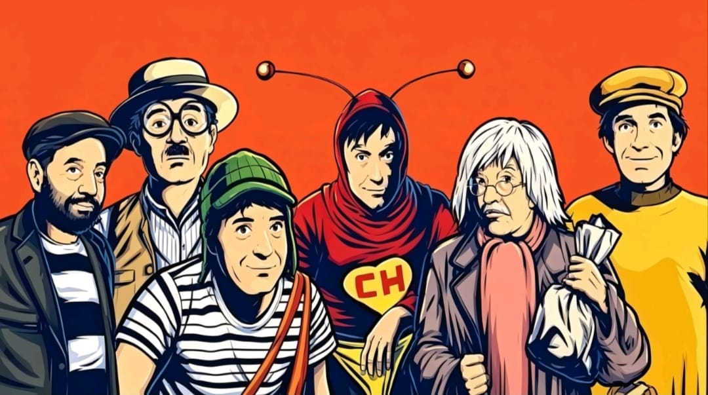
El Chapulín Colorado es, en esencia, el antihéroe más querido. Su verdadera grandeza no reside en sus poderes (que son limitados y a veces fallan), sino en su valor civil.
Chespirito siempre defendió que el Chapulín era más valiente que Superman o Batman porque estos últimos no conocen el miedo; en cambio, el Chapulín tiene pánico de todo, pero se enfrenta a los problemas de todas formas para ayudar a quien lo necesite tras el llamado de:
"¡Oh! Y ahora, ¿quién podrá defenderme?".
Es un personaje que mezcla el humor físico (slapstick), juegos de palabras brillantes y una brújula moral inquebrantable, logrando traspasar fronteras generacionales y culturales en todo el mundo, especialmente en América Latina y Brasil.
ACERCA DEL AUTOR
ROBERTO GÓMEZ BOLAÑOS
El Shakespeare Mexicano
Roberto Gómez Bolaños (Ciudad de México, 1929 – Cancún, 2014) fue un polímata del entretenimiento: escritor, actor, director, comediante y productor.
Antes de saltar a la fama frente a las cámaras, consolidó su carrera como un guionista brillante para cine y radio, lo que le valió el apodo de "Chespirito", otorgado por el director Agustín P. Delgado, quien lo consideraba un "pequeño Shakespeare" por su talento para escribir y su baja estatura.
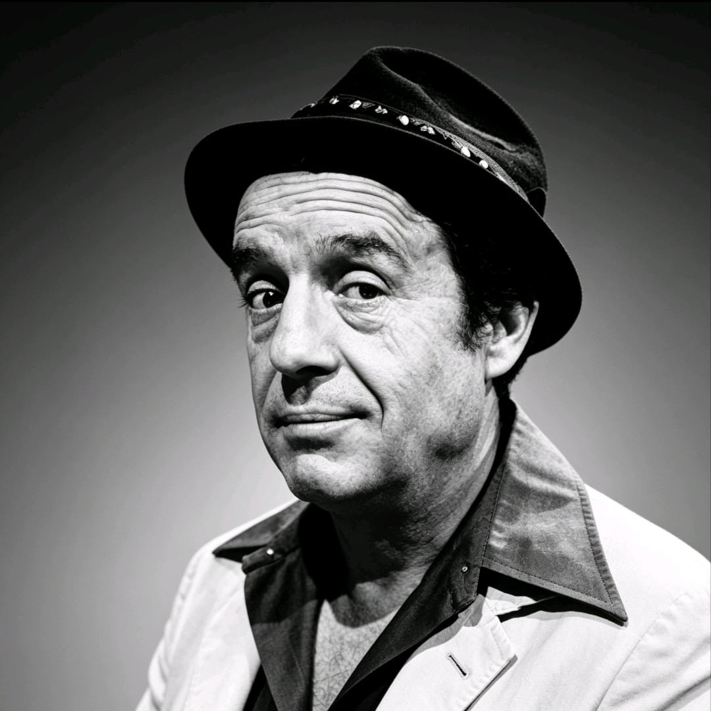
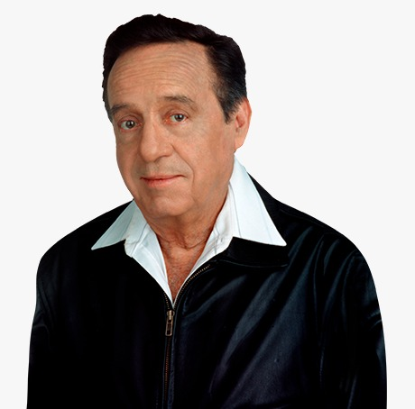
Su gran explosión creativa ocurrió en la década de los 70 con el nacimiento de El Chavo del Ocho y El Chapulín Colorado. A través de estos programas, Gómez Bolaños revolucionó el humor televisivo, utilizando un lenguaje blanco pero profundamente ingenioso que conectó con millones de personas en toda Iberoamérica.
Su legado incluye no solo televisión, sino también cine (El Chanfle), teatro (11 y 12) y literatura. Es recordado como uno de los iconos culturales más importantes de la lengua española, habiendo fallecido a los 85 años dejando un vacío irreemplazable en la comedia mundial.
Un héroe de carne y hueso
A menudo me preguntan cómo nació el Chapulín. Y la verdad es que no fue un chispazo de suerte, sino una respuesta a una necesidad filosófica. Yo veía las pantallas llenas de héroes importados: tipos altos, rubios, musculosos y, sobre todo, invencibles. Pero para mí, eso no era heroísmo. Si no tienes miedo, si las balas te rebotan y puedes mover planetas, ¿dónde está el mérito?
Yo quería crear a alguien que fuera todo lo contrario. Quería un héroe que fuera débil, torpe, feo y, por encima de todo, miedoso. Porque el verdadero héroe es aquel que, estando muerto de miedo, se enfrenta al peligro.
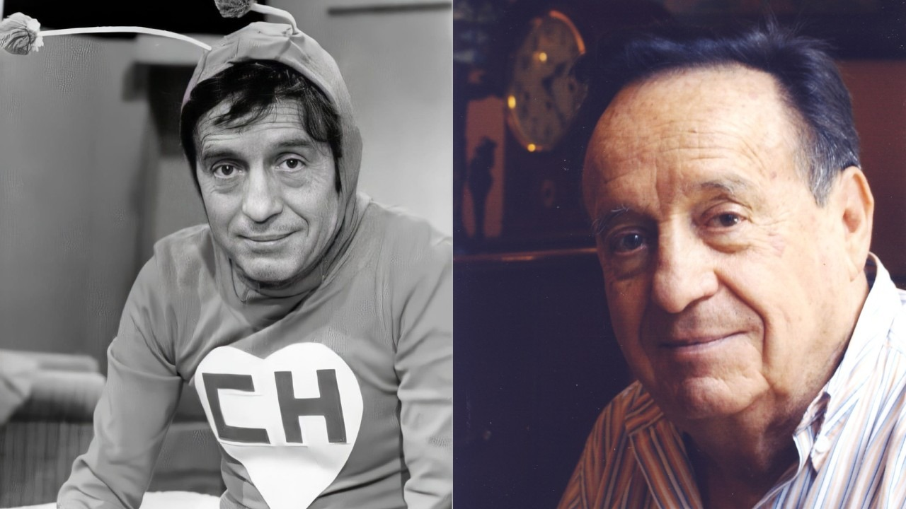
El nombre vino de mi amor por lo nuestro. El "Chapulín" es un saltamontes mexicano; es pequeño y parece insignificante, pero tiene una agilidad sorprendente. El color rojo fue una decisión técnica: en la televisión de los 70, era el color que mejor funcionaba con los efectos de chroma key que usábamos para mis pastillas de chiquitolina. El corazón amarillo en el pecho no era solo un adorno; era para recordar que su única arma real era la bondad.
Interpretar al Chapulín fue, posiblemente, el reto físico más grande de mi carrera. Yo ya no era un jovencito cuando empecé a dar saltos por los estudios.
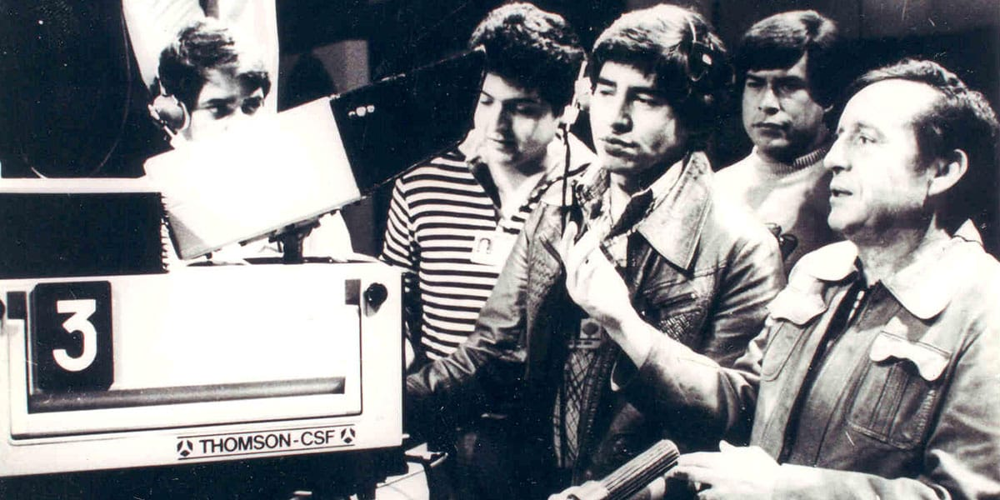
No contaban con que, detrás de cada caída y cada golpe contra una pared, había un guion fríamente calculado. Me gustaba el humor de "pastelazo", el slapstick, pero quería que tuviera una lógica gramatical. Cada vez que me tropezaba, estaba intentando hacer una crítica a la arrogancia humana.
Recuerdo que, al ponerme las mallas rojas y las antenitas, sentía una transformación extraña. El traje era ajustado y, a veces, incómodo, pero me daba una libertad absoluta. Bajo esa máscara, yo podía ser el más tonto del mundo y, al mismo tiempo, el más sabio, porque el Chapulín siempre terminaba ganando, aunque fuera por pura casualidad o porque el villano se rendía de la risa.
Lo más satisfactorio no fue la fama, sino darme cuenta de que el público entendía el mensaje. Cuando veía a un niño con un Chipote Chillón de plástico, no veía a un fan de una estrella de TV, veía a alguien que creía que él también podía ser un héroe sin necesidad de tener superpoderes.
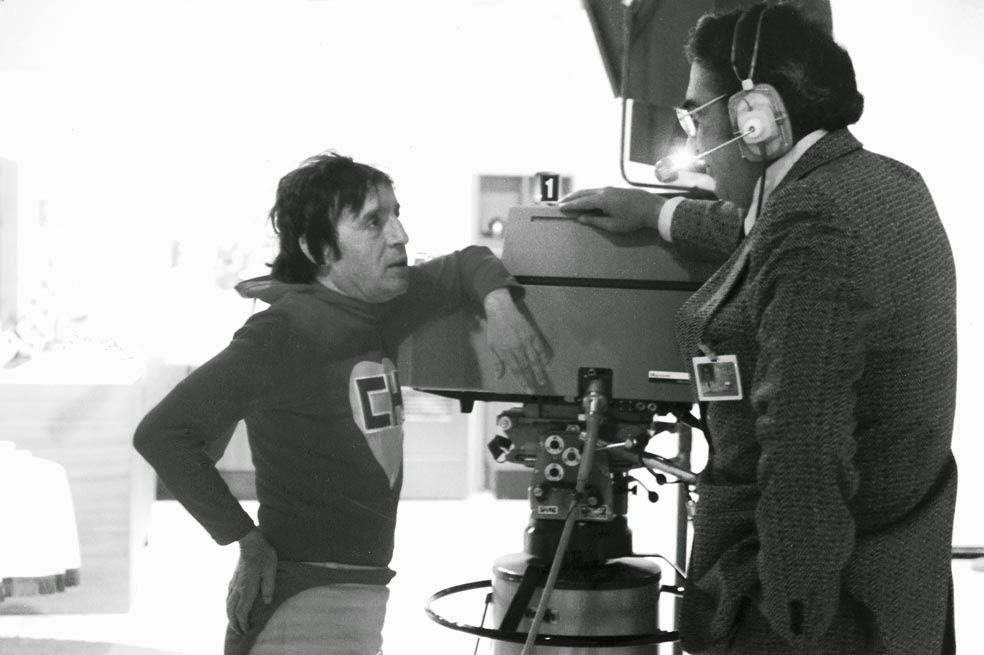
LEGADO DEL PERSONAJE
Para mí, el Chapulín fue mi mejor obra porque es la más honesta. Yo le presté mis miedos, mis dudas y mi baja estatura, y él me devolvió el cariño de todo un continente. Al final, después de tantos años de grabaciones y golpes, me quedo con esa satisfacción: demostramos que la nobleza es más fuerte que un ratón y que la astucia... bueno, la astucia siempre le gana a la fuerza bruta.
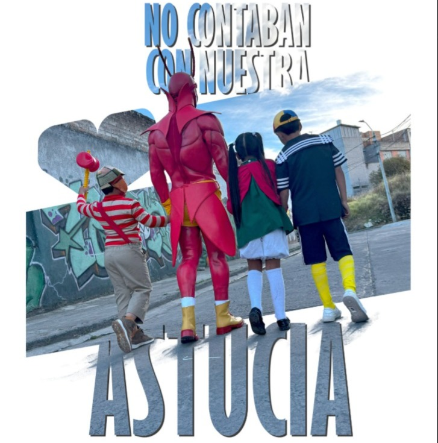
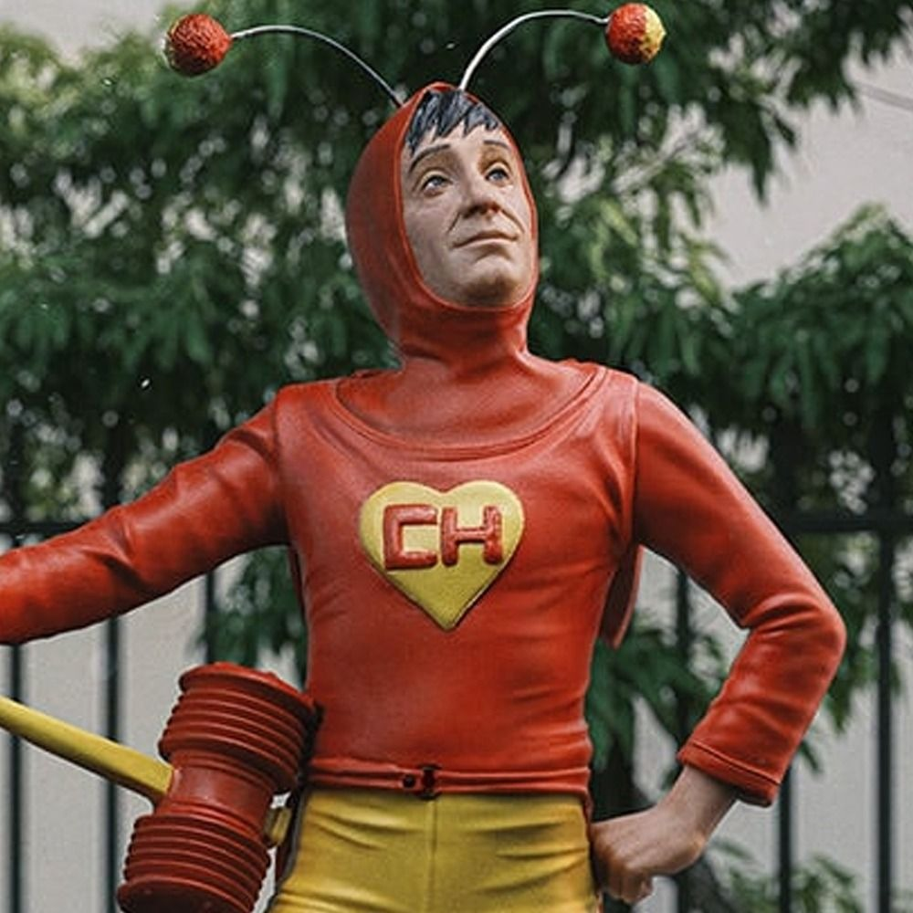
Cuando escribí el último capítulo del Chapulín, no imaginé que el personaje se convertiría en un símbolo que rompería las barreras del tiempo y el espacio. Mi legado no son solo los libretos o los efectos especiales rudimentarios; es la creación de un lenguaje universal.
El legado más grande que dejo es haber demostrado que América Latina podía exportar su propia mitología. Mientras el mundo miraba hacia el norte buscando modelos de perfección, nosotros nos reíamos de nuestras propias torpezas. El Chapulín es el legado de la resiliencia: no importa cuántas veces te caigas o cuántas veces te golpees con la puerta, lo que importa es que te levantes y sigas intentándolo.
Me enorgullece saber que mi legado es "blanco". Logré que el abuelo, el padre y el hijo se sentaran frente al televisor y se rieran de lo mismo, sin necesidad de recurrir a la vulgaridad. Ese es el verdadero poder de la comedia: ser un puente, no un muro.
EL GRAN MENSAJE
Para él, interpretarme no era solo hacer reír. Era demostrar que hasta el más bajito, el más flaco y el más miedoso puede marcar la diferencia si tiene el corazón limpio. Al final del día, cuando se quitaba la capucha roja, se sentía orgulloso porque sabía que, a través de mí, le estaba diciendo al mundo: "¡No se desesperen, que mientras haya buenos que me sigan, siempre habrá esperanza!"
Cualquiera puede ser el Chapulín Colorado. No necesitas un traje rojo; solo necesitas un corazón limpio, la voluntad de ayudar a los demás y el valor suficiente para enfrentar tus propios miedos, aunque te tiemblen las rodillas.
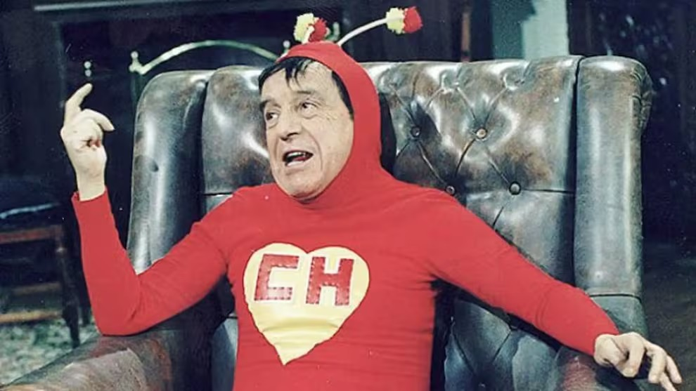
"Héroe es el que vence el pánico y se enfrenta a la adversidad. Yo le di al público un héroe que era un ser humano, con todas sus limitaciones, y el público le dio un lugar en la eternidad."
— Roberto Gómez Bolaños
Superman no tiene mérito porque es invencible. El Chapulín, en cambio, tiene miedo de los ratones, de la oscuridad y de los tipos grandes. Mi mensaje es que ser valiente requiere, forzosamente, tener miedo. Si no tienes miedo, eres temerario, pero no eres valiente.
El escudo es un corazón. Eso no fue casualidad. El mensaje es que la bondad y la intención de ayudar son más importantes que la capacidad técnica para resolver el problema. El Chapulín muchas veces ganaba por error, pero su intención siempre fue ayudar.
En un mundo que idolatra la fuerza bruta y el poder económico, el Chapulín propone la astucia. La capacidad de pensar, de encontrar salidas creativas y de reírse de uno mismo. "No contaban con mi astucia" es, en realidad, un elogio a la inteligencia del que parece débil.